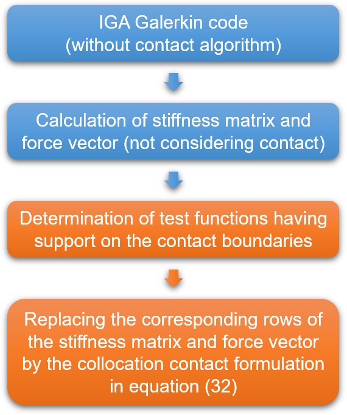

The isogeometric collocated contact surface approach is based on a simple pointwise enforcement of the contact constraints. The CCS approach does not need enhancements to removeoscillations for highly non-uniform meshes. It is less expensive, easier to code and can be added to a pre-existingisogeometric analysis code with minimal e-ort. Numerical examples in both small and large simulations are investigated to compare the approach with some available contact-formulations and to demonstrate its accuracy.
In contrast to FEM, Isogeometric Analysis (IGA) is inherently based on basis functions, such as B-Splines or NURBS. IGA suppresses discretization-induced contact projection issues, which makes it particularly appealing for computational contact mechanics. In the pointwise category, the integral representing the contact contribution to the weak form is computed through point collocation at a given set of points, typically slave nodes (in FEM) or the physical maps of the knots on the slave-to-segment. In integral approaches, in contrast, the contact contributions are computed through different types of integration. These approaches pass the patch test, but
The paper is structured as follows. In Section 2, they formulate the elastostatic boundary value problem with frictionless contact in strong and weak form in the continuum setting. Section 3 reviews isogeometric Galerkin and collocation methods for bulk and contact-discretization, including some available contact formulations. The performance of CCS and available formulations is compared by means of numerical examples in Section 5. Conclusions are drawn in Section 6 of the paper. They outline the fundamental continuum equations of elstostatics with contact with the finite strain setting.
In the special case of small deformations, a distinction between the reference and the current configuration is not necessary and the linearized strain tensor can be used as strain measure. The penalty approach regularizes the contact constraints in (6) by allowing for a small.penetration of the contacting bodies. In one-pass approaches, body B(1) is treated as master body and the contact.traction on the master body is computed (7) and (5) follows from the contact traction on the slave body from the action-reaction principle.
In two-half-pass formulations, two loops are performed treating each surface alter-natively as slave and master. In each loop, the contact tractions are computed only on the surface currently treated as slave. The equilibrium at the contact surfaces is no longer explicitly enforced but recovered a posteriori with high accuracy. The elastostatic boundary value problem with contact for contact for the two bodies B(k) occupying the domains Ω(k), in the reference configuration is formulated in the following in strong form.
Based on the principle of virtual work, the finite deformation elasticity elasticity problem in the form of the reference configuration. The current and contact surfaces in the current form can also be expressed in the weak form, which exploits the coincidence of the contact surfaces on the current surface. The weak form is based on the contact Piola traction vectors, which are computed from the contact Cauchy traction vectors t(k) of Section 2.2.
In this section, they review the basics of B-spline and NURBS basis functions. Then they illustrate isogeometric Galerkin and collocation methods including both bulk and contact discretization. A B-Spline basis of degree p is constructed based on a so-called knot vector, i.e. a knot vector. The knot vector is assumed to be open, which implies a non-decreasing sequence of real numbers. If a knot has a multiplicity k, the continuity of the basis is Cp−k at that knot. The continuity is the interior of a knot span.
Bivariate NURBS basis functions Ri,j of degrees p and q in the two parametric directions with the corresponding weights wi,j are defined by a product of the univariate B-splinebasis functions Ni,p(ξ), Mj,q(η) as well as a linear combination of control points (P i,j) and (Ri,j,j), with corresponding basis functions (Pi, j, p, q) The Galerkin formulation, like FEM, is based on the discretization of the weak form (16)
PTS can be seen as GPTS with a reduced quadrature strategy. Instead of standard Gauss-based contact points, the quadratures points are here the Greville, Demko or Botella abscissae. Quadrature weights are computed once at the beginning of the simulation by solving the univariate B-Spline basis functions Ni (of the slave contact surface) and the cor-responding collocation points ˆτi. The next step is to choose the test function for the test.
The idea is to consider a combination of area and edge terms for the Neumann (EC) terms for both edges and edges. The Dirichlet boundary conditions are enforced strongly. They recover the strong form of Neumann’s Neumann ‘boundary’ conditions and of the contact conditions at the collocation points located at the contact boundary, respectively and at the edges. They use the sifting properties of Eq. (31) to the weighted residual form (30)
The idea of the CCS approach is to combine a contact formulation based on isogeometric collocation with a Galerkin treatment of the bulk. The hybrid discretization of the approach is obtained by adopting as test functions: NURBS functions for the degrees of freedom corresponding to control points at the contact boundary or at the Neumann boundaries. The resulting expression of the test functions reads:. (P (k) (X) ) (G(k)) (G) (K))
Discretization of each body with.10 × 5 elements of polynomial degree p = 3. The weighted residual formulation (30) yields 2.2�k=1.1.2.2. The weighted. residual formulation yields a weighted weighted residual of 3.5 elements per body. Schematic representation of the isogeometric CCS approach. The CCS is based on the weighted residual form of a polynometric CCS.
A pointwise contact treatment combined with the two-half-pass algorithm and the penalty method passes the patch test to machine precision and delivers accurate results. The CCS approach is expected to inherit these performance features, while keeping the accuracy and accuracy of Galerkin for the bulk behavior. For frictionless contact, a drawback of the approach is the loss of symmetry of the tangent stiffness matrix. In case of inactive contact, the collocation-based contact formulation automatically enforces homogeneous Neumannboundary conditions, hence there is no need for segmentation.
Schematic representation of the implementation procedure of the CCS approach. Flowchart: Comparison of collocation-based and Galerkin-based penalty contact approaches. CCS is a penalty contact approach that uses collocation to reduce penalty contact. 15.15: Collocation based approach is the most effective penalty contact solution available in the world. 15:15: 15. 15: 15,15:15 penalty contact. 15: 5:15.
In this section they consider fthe numerical examples to investigate the performance of the proposed CCS approach. The main objective of this setup is to test the capability of a contact formulation to transfer a constant contact pressure across the interface between two bodies discretized with non-conforming meshes. The geometry, boundary conditions and parameters are depicted in Figure 5.1. The two blocks are pressed onto each other with a uniform pressure of 0.01, which is applied within ten loadsteps. Since the considered deformations are comparatively small, elasticity is assumed for this example.
Contact patch test: Geometry, boundary conditions and simulation setup. The resulting errors of the stress component σyy are shown in Figures 6 and 7. Figure 6 also includes the error plots for the newly proposed CCS and ECCS approaches. Errors of the GPTS and PTS approaches are shown. Results show that all fthe methods fulfil the contact patch test to machine precision. For this case, EC and CCS approaches perform nearly identically to CCS.
Contact patch test: Error of stress σyy for the proposed collocated contact surface approaches (CCS & ECCS) and enhanced collocation (EC) CCS and EC are the results of a contact patch test. CCS/EC/EC is the result of a patch test of stress and collocation. CSC/EC and EC/CCS/EC are the two approaches proposed for collocated surface approaches. The results are based on the proposed approaches to collocate contact surface surfaces (CC/EC)
Contact patch test: Error of stress σyy for Gauss-point-to-segment (GPTS) approaches and the corresponding two-half-pass (2hp) formulations. Two deformable blocks are pressed against each other. Geometry, boundary conditions and further simulationparameters are illustrated in Figure 8. They adopt a linearly-elastic material model to adhere to the original simulation setup. The simulations are based on the original model
Two deformable blocks: Geometry, boundary conditions and simulation setup. Figure 9 contains the results for the C, EC and the proposed CCS approaches. Strong oscillations appear with pure collocation (C) and EC approach. For these approaches, for these approaches no oscillations are obtained. The stress plots of the stress component σyy for the GPTS and PTS approaches are given in Figure 10. With this exception, the obtained results are nearly identical for all methods.
Stress σyy for the proposed collocated contact surface approaches (CCS &ECCS) and enhanced collocation (EC) approaches. Discretization of each body with 10 × 15 control points. (a) CCS. (b) ECCS. (c) CECS (C) and EC (C), (A) (B) and (A), CEC) Discretized with 10× 15 control point points. (a), (b), (c), (d) (d), (g) (e) CSC) (CSC) & (eCCS) (ECCCS)
Stress σyy for the proposed collocated contact surface approaches (CCS &ECCS) and enhanced collocation (EC) approaches. Discretization of each body with 25 × 10 control points. (a) CCS. (b) ECCS. (c) CECS (C) and EC (C), (A) (B) and (A), CEC) Discretized with 25 control points. (a), (b), (c), (d) (d), (g) (g), (e) C) C.C. (e), (f)
The classical Hertz frictionless contact problem between a cylinder and a rigid plane is investigated. The geometry, boundary conditions and further simulation parameters are given in Figure 13. The cylinder is loaded with a vertical force P = 0.002 applied as a uniformly distributed distributed load. A coarse and a fine mesh are tested for fthe different polynomial orders to study the effects of the discretization on the results. The half-width of the contact area is calculated by the expression a =glyglyglyp with E′ =glyp, with a and p0 being the half width of the halfwidth of a contact area and the maximum normal pressure.
The results for the coarse discretization are given in Figure 14 along with the reference solution. For the lowest polynomial degree, the results of the C and ECapproaches show slight deviations. The newly proposed CCS approach is not affected by these deviations, which suggests that they may be an artefact of the incorporation of the boundary conditions and not induced by the contact formulation. The non-physical negative contact pressures which appear for all tested approaches close to the boundary of the contact region could be removed by a suitable post-processing scheme.
Hertzian contact: Contact stress distribution for discretization with 50 × 50 Bézier elements and a polynomial degree p = 2, 3, 4, 5.4. Ironing is modeled as Neo-Hookean solids with strain-energy density function given in Section 2.1.1. In very rare cases Newton-Raphson method was not converging, due to the residual alternating between two values in consecutive iterations (a phenomenon known as "jamming" or "zig-zagging" in the literature).
Figure 18 shows trace of the Cauchy stress tr(σ) for CCS and ECCS along with those for GPTS and the corresponding two-half-pass formulation. There are no visible differences between the plots, which further confirms the good performance of the proposed approach. Ironing: Vertical reaction forces for discretization with 80 × 20 Bézier elements and polynomial degree p = 3.2.4.6.8.
Collocated Contact Surface (CCS) approach is based on a simple pointwise enforcement of the contact constraints. Gauss-point-to-segment (GPTS) and a two-half-pass (2hp) formulation were tested for the frictionless two-dimensionless case in both small and large deformations. The CCS approach was based on pointwise pointwise contact algorithms in the Galerkin framework, it passes the contact boundaries. The GPTS-2hp is a 2hp approach with 80 × 20 Bézier elements and a polynomial degree p = 3.6.
The authors gratefully acknowledge the support of the German Research Foun-Gernation (DFG) within the DFG Priority Program SPP 1748 “Reliable Simulation Techniques’in Solid Mechanics’’rere’s ‘reliable simulation Techniques.’. The CCS algorithm is less expensive and easier to code, and can be added to a pre-existing isogeometric analysis code with minimal effort;. It enjoys the flexibility and robustness of the Galerkin framework in the bulk discretization of bulk and contact surfaces.